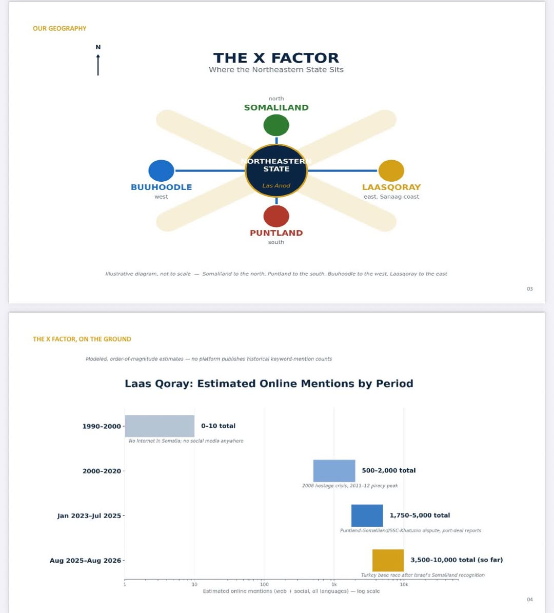

August 15, 2026
Our New Direction: The X Factor

For as long as I can remember, our people had to borrow a direction. Look north, and you were looking toward Somaliland. Look south, and you were looking toward Puntland. We were the hallway between two houses that weren't ours, always someone else's north, someone else's south, never our own.
That's over now.
Today our compass points two ways, and both of them belong to us. West, out past Buuhoodle, toward the Ethiopian frontier, land our elders walked long before any of these borders were drawn on a map. And east, all the way down to the water, to the port at Laas Qoray, where the Gulf of Aden meets a coastline that finally answers to us.
This is what I call the X factor.
I keep thinking about that port. People have been trading out of Laas Qoray for centuries; tuna, frankincense, livestock, boats going out and coming back for as long as anyone can remember. It's not a new place. What's new is that it's ours to build, ours to point to, ours to say:
this is where our state meets the sea.
And people are noticing. By my own rough count, Laas Qoray has shown up online more in the past year than it did across the whole 2023-to-mid-2025 stretch before it, thousands of mentions since last August alone, between the port deal, the state, and everything tied to it. A small coastal town neglected for a long time, most people outside our community had never heard of it but it is finally getting said out loud. Thanks to the formation of North East State of Somalia.

That's the shape of who we are now. Not a space squeezed between two neighbors, but a line running from the mountains near Buuhoodle all the way to the port at Laas Qoray. Inland to coastline. Frontier to harbor. Our own direction, start to finish.
I'll be sharing photos of the port over the next few posts, some of it is exactly how I remember it, some of it has changed, and all of it is worth showing you. If you've stood on that shore, or your family has, tell me in the comments. I want to hear it.
This is the first of a few posts I'll be putting up here every week about where we come from and where we're headed. Glad to have you along.
Laabta u Fura WB.